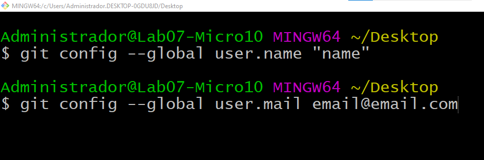
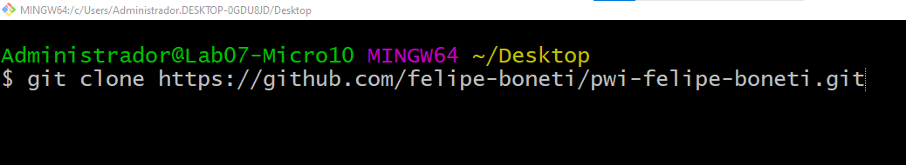
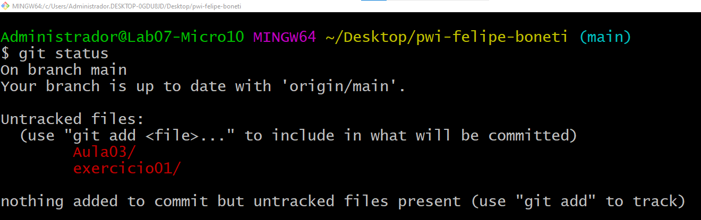
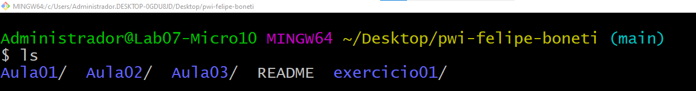
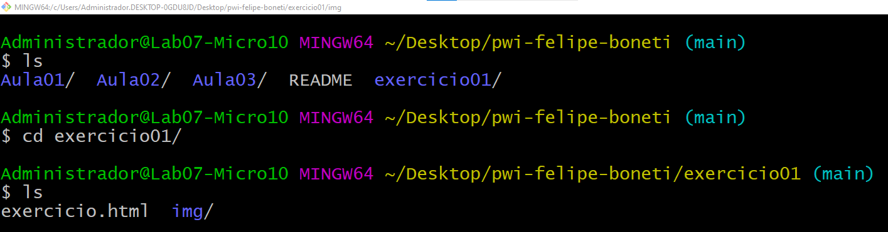
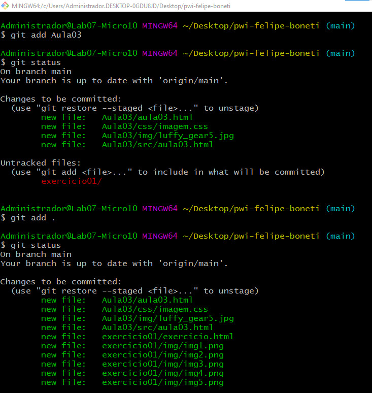

Para configurar o git no terminal são necessários dois comandos para efetuar o login.
São eles:
$ git config --global user.name "name" $ git config --global user.mail email@email.com
São os comandos utilizados dentro do terminal, para diversas funções
$ git clone "link do projeto"
Usado para importar um repositório existente
$ git status
Exibe arquivos criados, modificados ou exluídos
$ ls
Mostra as pastas e arquivos do repositório
$ cd "nome da pasta"
Entra na pasta
$ git add "nome do arquivo"
Prepara um arquivo especifico para ser enviado
$ git add .
Prepara todos arquivos alterados do repositório para ser enviado
